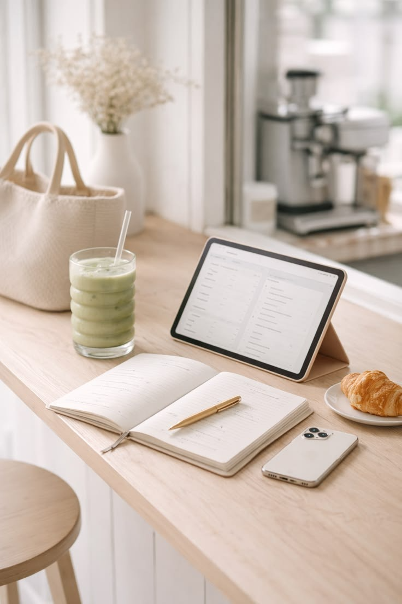

Your Day. Your Way.
Todolist: Simple Task
Management for a
Clutter-Free Life.
Plan, track, and achieve your daily goals effortlessly. Experience clarity and productivity, beautifully.
Started
Task adalah aplikasi to-do list minimalis dan estetis untuk
merapikan rutinitas harianmu.
Platform ini memudahkan perencanaan dan pelacakan target harian
secara intuitif.
Dilengkapi manajemen tugas yang terstruktur untuk membantumu tetap
fokus dan produktif.